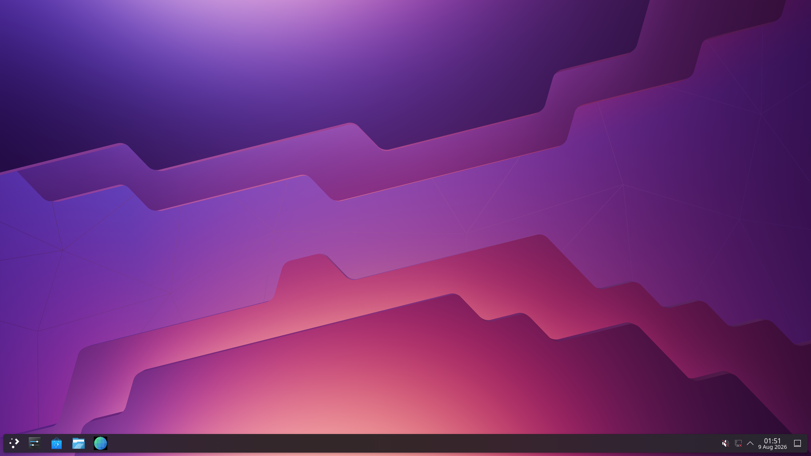

CONCURRENT MODE / LIVE ON ONEPLUS 7
THE PHONE STAYS A PHONE.
Android stays interactive. Plasma renders beside it through pooled gralloc buffers, Turnip/Zink, and no CPU readback.
See the hardware proof →

FULL DESKTOP
DIRECT AUDIO HEARD
TOUCH + KEYS PROVEN
ANDROID HOST RETAINED◆POOLED GRALLOC BUFFERS◆TURNIP + ZINK◆FULL DESKTOP AUDIO◆TOUCH + KEYBOARD◆
◆◆◆◆◆
01 THE PREMISE
Your phone doesn’t become a fake desktop. It runs one beside itself.
Android stays PID 1 and keeps its panel. The guest renders into Android-owned buffers; the presenter places them on a second display without a readback bridge.
02 CHOOSE A PATH
01 / SYSTEMRead the
architecture.
Android host. Shared kernel. Linux guest. Follow ownership all the way down to the panel.
ENTER → 02 / EVIDENCESee what
already works.
Real device captures, dated milestones, native KMS, GPU compositing, touch, and the round trip home.
ENTER →03 OPEN ENGINEERING